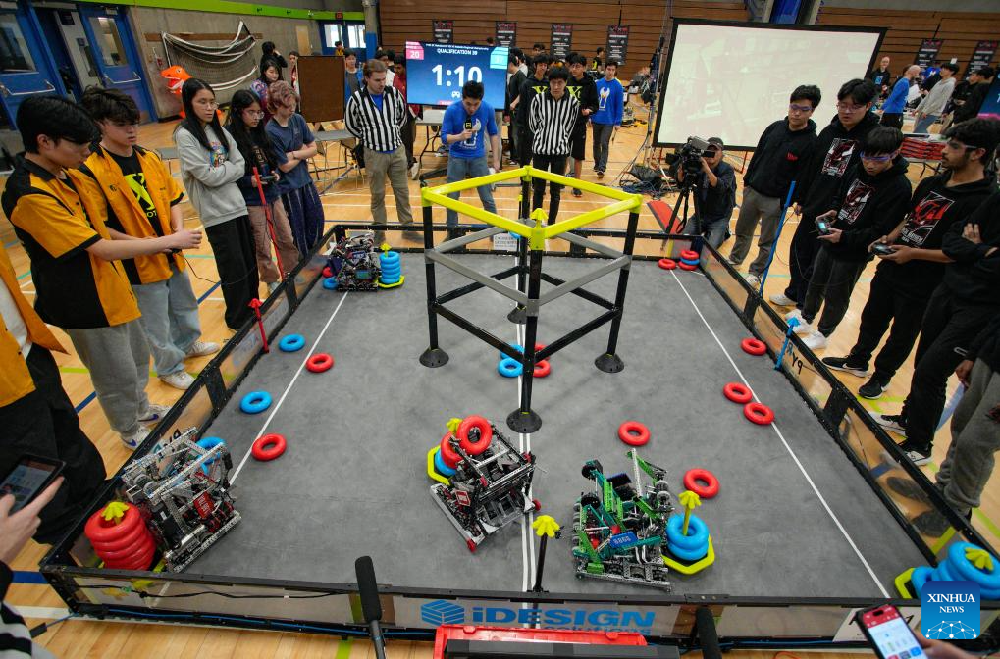

Publicado el 26 de Octubre de 2025
Los mejores equipos del mundo se preparan para enfrentarse en la esperada RoboCup 2025, que reunirá a competidores de más de 40 países en una intensa semana de desafíos tecnológicos.
El evento contará con diversas categorías, desde robots de rescate y robots industriales hasta competencias de fútbol robótico. Se espera la presentación de innovaciones en inteligencia artificial, visión computarizada y sensores de alta precisión.
Los organizadores destacan que esta edición busca no solo promover la competencia, sino también el intercambio académico y la colaboración entre universidades y centros de investigación.
ROBOTech estará presente cubriendo las mejores presentaciones y entrevistas con los equipos destacados.